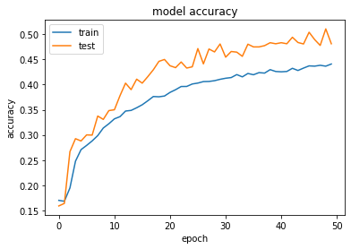
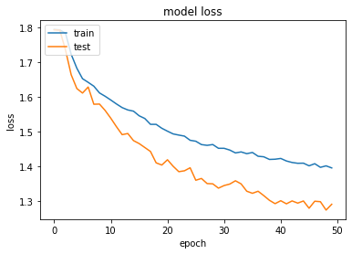
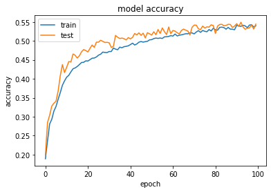
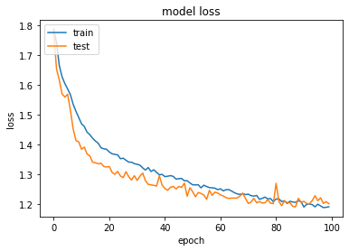

[0.18039216],
...,
[0.04705882],
[0.04313725],
[0.03137255]],
[[0.11372549],
[0.17647059],
[0.14901961],
...,
[0.05098039],
[0.0627451 ],
[0.05490196]],
[[0.14509804],
[0.14901961],
[0.25490196],
...,
[0.04705882],
[0.06666667],
[0.07058824]]],
[[[0.87843137],
[0.89019608],
[0.89411765],
...,
[0.76862745],
[0.77647059],
[0.78039216]],
[[0.90196078],
[0.82745098],
[0.85490196],
...,
[0.74901961],
[0.75294118],
[0.74509804]],
[[0.85490196],
[0.76470588],
[0.78039216],
...,
[0.75294118],
[0.74509804],
[0.75686275]],
...,
[[1. ],
[1. ],
[1. ],
...,
[1. ],
[1. ],
[1. ]],
[[1. ],
[1. ],
[1. ],
...,
[1. ],
[1. ],
[1. ]],
[[1. ],
[0.99607843],
[1. ],
...,
[1. ],
[1. ],
[1. ]]]])
In [13]: X_shuffled.shape[1:]
Out[13]: (48, 48, 1)
In [14]: X.shape[1:]
Out[14]: (48, 48, 1)
In [15]: runfile('/Users/AlbertoK/Desktop/kode/convolutional_net.py', wdir='/Users/AlbertoK/Desktop/kode')
3-conv-2-nodes-1-dense-1578914054
Train on 21600 samples, validate on 2400 samples
Epoch 1/50
21600/21600 [==============================] - 489s 23ms/sample - loss: 1.7935 - acc: 0.1698 - val_loss: 1.7924 - val_acc: 0.1587
Epoch 2/50
21600/21600 [==============================] - 454s 21ms/sample - loss: 1.7921 - acc: 0.1680 - val_loss: 1.7916 - val_acc: 0.1637
Epoch 3/50
21600/21600 [==============================] - 448s 21ms/sample - loss: 1.7826 - acc: 0.1945 - val_loss: 1.7342 - val_acc: 0.2667
Epoch 4/50
21600/21600 [==============================] - 452s 21ms/sample - loss: 1.7222 - acc: 0.2477 - val_loss: 1.6634 - val_acc: 0.2925
Epoch 5/50
21600/21600 [==============================] - 443s 21ms/sample - loss: 1.6821 - acc: 0.2707 - val_loss: 1.6237 - val_acc: 0.2879
Epoch 6/50
21600/21600 [==============================] - 476s 22ms/sample - loss: 1.6521 - acc: 0.2791 - val_loss: 1.6108 - val_acc: 0.3000
Epoch 7/50
21600/21600 [==============================] - 454s 21ms/sample - loss: 1.6415 - acc: 0.2881 - val_loss: 1.6281 - val_acc: 0.2996
Epoch 8/50
21600/21600 [==============================] - 443s 20ms/sample - loss: 1.6305 - acc: 0.2986 - val_loss: 1.5786 - val_acc: 0.3375
Epoch 9/50
21600/21600 [==============================] - 441s 20ms/sample - loss: 1.6111 - acc: 0.3137 - val_loss: 1.5791 - val_acc: 0.3308
Epoch 10/50
21600/21600 [==============================] - 447s 21ms/sample - loss: 1.6015 - acc: 0.3222 - val_loss: 1.5606 - val_acc: 0.3483
Epoch 11/50
21600/21600 [==============================] - 439s 20ms/sample - loss: 1.5907 - acc: 0.3319 - val_loss: 1.5383 - val_acc: 0.3500
Epoch 12/50
21600/21600 [==============================] - 438s 20ms/sample - loss: 1.5793 - acc: 0.3363 - val_loss: 1.5139 - val_acc: 0.3779
Epoch 13/50
21600/21600 [==============================] - 439s 20ms/sample - loss: 1.5690 - acc: 0.3475 - val_loss: 1.4912 - val_acc: 0.4029
Epoch 14/50
21600/21600 [==============================] - 438s 20ms/sample - loss: 1.5622 - acc: 0.3487 - val_loss: 1.4945 - val_acc: 0.3900
Epoch 15/50
21600/21600 [==============================] - 438s 20ms/sample - loss: 1.5587 - acc: 0.3540 - val_loss: 1.4741 - val_acc: 0.4108
Epoch 16/50
21600/21600 [==============================] - 442s 20ms/sample - loss: 1.5454 - acc: 0.3600 - val_loss: 1.4656 - val_acc: 0.4029
Epoch 17/50
21600/21600 [==============================] - 460s 21ms/sample - loss: 1.5377 - acc: 0.3679 - val_loss: 1.4542 - val_acc: 0.4158
Epoch 18/50
21600/21600 [==============================] - 448s 21ms/sample - loss: 1.5209 - acc: 0.3763 - val_loss: 1.4429 - val_acc: 0.4296
Epoch 19/50
21600/21600 [==============================] - 440s 20ms/sample - loss: 1.5208 - acc: 0.3758 - val_loss: 1.4102 - val_acc: 0.4462
Epoch 20/50
21600/21600 [==============================] - 444s 21ms/sample - loss: 1.5096 - acc: 0.3773 - val_loss: 1.4039 - val_acc: 0.4500
Epoch 21/50
21600/21600 [==============================] - 446s 21ms/sample - loss: 1.5012 - acc: 0.3845 - val_loss: 1.4191 - val_acc: 0.4375
Epoch 22/50
21600/21600 [==============================] - 439s 20ms/sample - loss: 1.4933 - acc: 0.3899 - val_loss: 1.4004 - val_acc: 0.4338
Epoch 23/50
21600/21600 [==============================] - 445s 21ms/sample - loss: 1.4900 - acc: 0.3963 - val_loss: 1.3848 - val_acc: 0.4450
Epoch 24/50
21600/21600 [==============================] - 440s 20ms/sample - loss: 1.4870 - acc: 0.3964 - val_loss: 1.3874 - val_acc: 0.4329
Epoch 25/50
21600/21600 [==============================] - 446s 21ms/sample - loss: 1.4750 - acc: 0.4013 - val_loss: 1.3960 - val_acc: 0.4354
Epoch 26/50
21600/21600 [==============================] - 439s 20ms/sample - loss: 1.4723 - acc: 0.4031 - val_loss: 1.3602 - val_acc: 0.4717
Epoch 27/50
21600/21600 [==============================] - 449s 21ms/sample - loss: 1.4627 - acc: 0.4060 - val_loss: 1.3653 - val_acc: 0.4412
Epoch 28/50
21600/21600 [==============================] - 442s 20ms/sample - loss: 1.4605 - acc: 0.4063 - val_loss: 1.3506 - val_acc: 0.4708
Epoch 29/50
21600/21600 [==============================] - 473s 22ms/sample - loss: 1.4628 - acc: 0.4078 - val_loss: 1.3498 - val_acc: 0.4650
Epoch 30/50
21600/21600 [==============================] - 445s 21ms/sample - loss: 1.4520 - acc: 0.4106 - val_loss: 1.3375 - val_acc: 0.4808
Epoch 31/50
21600/21600 [==============================] - 445s 21ms/sample - loss: 1.4520 - acc: 0.4127 - val_loss: 1.3450 - val_acc: 0.4546
Epoch 32/50
21600/21600 [==============================] - 439s 20ms/sample - loss: 1.4469 - acc: 0.4140 - val_loss: 1.3492 - val_acc: 0.4658
Epoch 33/50
21600/21600 [==============================] - 451s 21ms/sample - loss: 1.4387 - acc: 0.4200 - val_loss: 1.3587 - val_acc: 0.4646
Epoch 34/50
21600/21600 [==============================] - 468s 22ms/sample - loss: 1.4416 - acc: 0.4154 - val_loss: 1.3497 - val_acc: 0.4563
Epoch 35/50
21600/21600 [==============================] - 490s 23ms/sample - loss: 1.4366 - acc: 0.4222 - val_loss: 1.3287 - val_acc: 0.4804
Epoch 36/50
21600/21600 [==============================] - 499s 23ms/sample - loss: 1.4400 - acc: 0.4196 - val_loss: 1.3227 - val_acc: 0.4750
Epoch 37/50
21600/21600 [==============================] - 487s 23ms/sample - loss: 1.4291 - acc: 0.4238 - val_loss: 1.3286 - val_acc: 0.4750
Epoch 38/50
21600/21600 [==============================] - 508s 24ms/sample - loss: 1.4276 - acc: 0.4229 - val_loss: 1.3160 - val_acc: 0.4775
Epoch 39/50
21600/21600 [==============================] - 535s 25ms/sample - loss: 1.4200 - acc: 0.4298 - val_loss: 1.3025 - val_acc: 0.4833
Epoch 40/50
21600/21600 [==============================] - 497s 23ms/sample - loss: 1.4206 - acc: 0.4261 - val_loss: 1.2929 - val_acc: 0.4812
Epoch 41/50
21600/21600 [==============================] - 469s 22ms/sample - loss: 1.4228 - acc: 0.4255 - val_loss: 1.3013 - val_acc: 0.4833
Epoch 42/50
21600/21600 [==============================] - 458s 21ms/sample - loss: 1.4155 - acc: 0.4262 - val_loss: 1.2925 - val_acc: 0.4812
Epoch 43/50
21600/21600 [==============================] - 466s 22ms/sample - loss: 1.4113 - acc: 0.4325 - val_loss: 1.3008 - val_acc: 0.4942
Epoch 44/50
21600/21600 [==============================] - 506s 23ms/sample - loss: 1.4089 - acc: 0.4281 - val_loss: 1.2945 - val_acc: 0.4837
Epoch 45/50
21600/21600 [==============================] - 454s 21ms/sample - loss: 1.4093 - acc: 0.4329 - val_loss: 1.3006 - val_acc: 0.4808
Epoch 46/50
21600/21600 [==============================] - 455s 21ms/sample - loss: 1.4016 - acc: 0.4373 - val_loss: 1.2797 - val_acc: 0.5042
Epoch 47/50
21600/21600 [==============================] - 446s 21ms/sample - loss: 1.4077 - acc: 0.4367 - val_loss: 1.2999 - val_acc: 0.4896
Epoch 48/50
21600/21600 [==============================] - 446s 21ms/sample - loss: 1.3973 - acc: 0.4384 - val_loss: 1.2986 - val_acc: 0.4779
Epoch 49/50
21600/21600 [==============================] - 445s 21ms/sample - loss: 1.4015 - acc: 0.4367 - val_loss: 1.2745 - val_acc: 0.5108
Epoch 50/50
21600/21600 [==============================] - 443s 21ms/sample - loss: 1.3956 - acc: 0.4410 - val_loss: 1.2912 - val_acc: 0.4812


In [16]: runfile('/Users/AlbertoK/Desktop/kode/convolutional_net.py', wdir='/Users/AlbertoK/Desktop/kode')
3-conv-2-nodes-1-dense-1578960509
Train on 21600 samples, validate on 2400 samples
Epoch 1/50
1920/21600 [=>............................] - ETA: 9:26 - loss: 1.8015 - acc: 0.1552 Traceback (most recent call last):
File "<ipython-input-16-1dadb137fd66>", line 1, in <module>
runfile('/Users/AlbertoK/Desktop/kode/convolutional_net.py', wdir='/Users/AlbertoK/Desktop/kode')
File "/Applications/anaconda3/lib/python3.7/site-packages/spyder_kernels/customize/spydercustomize.py", line 827, in runfile
execfile(filename, namespace)
File "/Applications/anaconda3/lib/python3.7/site-packages/spyder_kernels/customize/spydercustomize.py", line 110, in execfile
exec(compile(f.read(), filename, 'exec'), namespace)
File "/Users/AlbertoK/Desktop/kode/convolutional_net.py", line 75, in <module>
history = model.fit(X_shuffled, y_shuffled, batch_size=32, epochs=50, validation_split=0.1, callbacks=[tensorboard])
File "/Applications/anaconda3/lib/python3.7/site-packages/tensorflow/python/keras/engine/training.py", line 880, in fit
validation_steps=validation_steps)
File "/Applications/anaconda3/lib/python3.7/site-packages/tensorflow/python/keras/engine/training_arrays.py", line 329, in model_iteration
batch_outs = f(ins_batch)
File "/Applications/anaconda3/lib/python3.7/site-packages/tensorflow/python/keras/backend.py", line 3076, in __call__
run_metadata=self.run_metadata)
File "/Applications/anaconda3/lib/python3.7/site-packages/tensorflow/python/client/session.py", line 1439, in __call__
run_metadata_ptr)
KeyboardInterrupt
In [17]:
In [17]: runfile('/Users/AlbertoK/Desktop/kode/convolutional_net.py', wdir='/Users/AlbertoK/Desktop/kode')
Traceback (most recent call last):
File "<ipython-input-17-1dadb137fd66>", line 1, in <module>
runfile('/Users/AlbertoK/Desktop/kode/convolutional_net.py', wdir='/Users/AlbertoK/Desktop/kode')
File "/Applications/anaconda3/lib/python3.7/site-packages/spyder_kernels/customize/spydercustomize.py", line 827, in runfile
execfile(filename, namespace)
File "/Applications/anaconda3/lib/python3.7/site-packages/spyder_kernels/customize/spydercustomize.py", line 110, in execfile
exec(compile(f.read(), filename, 'exec'), namespace)
File "/Users/AlbertoK/Desktop/kode/convolutional_net.py", line 28, in <module>
X = X/255.0
KeyboardInterrupt
In [18]:
In [18]: runfile('/Users/AlbertoK/Desktop/kode/convolutional_net.py', wdir='/Users/AlbertoK/Desktop/kode')
3-conv-2-nodes-1-dense-1578960680
Train on 21600 samples, validate on 2400 samples
Traceback (most recent call last):
File "<ipython-input-18-1dadb137fd66>", line 1, in <module>
runfile('/Users/AlbertoK/Desktop/kode/convolutional_net.py', wdir='/Users/AlbertoK/Desktop/kode')
File "/Applications/anaconda3/lib/python3.7/site-packages/spyder_kernels/customize/spydercustomize.py", line 827, in runfile
execfile(filename, namespace)
File "/Applications/anaconda3/lib/python3.7/site-packages/spyder_kernels/customize/spydercustomize.py", line 110, in execfile
exec(compile(f.read(), filename, 'exec'), namespace)
File "/Users/AlbertoK/Desktop/kode/convolutional_net.py", line 74, in <module>
history = model.fit(X_shuffled, y_shuffled, batch_size=32, epochs=50, validation_split=0.1, callbacks=[tensorboard])
File "/Applications/anaconda3/lib/python3.7/site-packages/tensorflow/python/keras/engine/training.py", line 880, in fit
validation_steps=validation_steps)
File "/Applications/anaconda3/lib/python3.7/site-packages/tensorflow/python/keras/engine/training_arrays.py", line 215, in model_iteration
mode=mode)
File "/Applications/anaconda3/lib/python3.7/site-packages/tensorflow/python/keras/callbacks.py", line 106, in configure_callbacks
callback_list.set_model(callback_model)
File "/Applications/anaconda3/lib/python3.7/site-packages/tensorflow/python/keras/callbacks.py", line 178, in set_model
callback.set_model(model)
File "/Applications/anaconda3/lib/python3.7/site-packages/tensorflow/python/keras/callbacks.py", line 1010, in set_model
self._init_writer()
File "/Applications/anaconda3/lib/python3.7/site-packages/tensorflow/python/keras/callbacks.py", line 947, in _init_writer
self.writer = tf_summary.FileWriter(self.log_dir, K.get_session().graph)
File "/Applications/anaconda3/lib/python3.7/site-packages/tensorflow/python/summary/writer/writer.py", line 370, in __init__
super(FileWriter, self).__init__(event_writer, graph, graph_def)
File "/Applications/anaconda3/lib/python3.7/site-packages/tensorflow/python/summary/writer/writer.py", line 91, in __init__
maybe_graph_as_def))
File "/Applications/anaconda3/lib/python3.7/site-packages/tensorflow/python/framework/meta_graph.py", line 579, in create_meta_graph_def
meta_graph_def.graph_def.MergeFrom(graph_def)
KeyboardInterrupt
In [19]:
In [19]: runfile('/Users/AlbertoK/Desktop/kode/convolutional_net.py', wdir='/Users/AlbertoK/Desktop/kode')
3-conv-2-nodes-1-dense-1578960708
Train on 21600 samples, validate on 2400 samples
Epoch 1/100
21600/21600 [==============================] - 234s 11ms/sample - loss: 1.7878 - acc: 0.1888 - val_loss: 1.7797 - val_acc: 0.1979
Epoch 2/100
21600/21600 [==============================] - 213s 10ms/sample - loss: 1.7432 - acc: 0.2359 - val_loss: 1.6544 - val_acc: 0.2846
Epoch 3/100
21600/21600 [==============================] - 337s 16ms/sample - loss: 1.6657 - acc: 0.2807 - val_loss: 1.6168 - val_acc: 0.3038
Epoch 4/100
21600/21600 [==============================] - 307s 14ms/sample - loss: 1.6278 - acc: 0.2930 - val_loss: 1.5704 - val_acc: 0.3279
Epoch 5/100
21600/21600 [==============================] - 293s 14ms/sample - loss: 1.6051 - acc: 0.3148 - val_loss: 1.5600 - val_acc: 0.3354
Epoch 6/100
21600/21600 [==============================] - 258s 12ms/sample - loss: 1.5872 - acc: 0.3271 - val_loss: 1.5691 - val_acc: 0.3408
Epoch 7/100
21600/21600 [==============================] - 252s 12ms/sample - loss: 1.5678 - acc: 0.3460 - val_loss: 1.5156 - val_acc: 0.3679
Epoch 8/100
21600/21600 [==============================] - 316s 15ms/sample - loss: 1.5354 - acc: 0.3635 - val_loss: 1.4524 - val_acc: 0.4083
Epoch 9/100
21600/21600 [==============================] - 273s 13ms/sample - loss: 1.5120 - acc: 0.3829 - val_loss: 1.4139 - val_acc: 0.4375
Epoch 10/100
21600/21600 [==============================] - 236s 11ms/sample - loss: 1.4910 - acc: 0.3944 - val_loss: 1.4093 - val_acc: 0.4162
Epoch 11/100
21600/21600 [==============================] - 248s 12ms/sample - loss: 1.4701 - acc: 0.4043 - val_loss: 1.3847 - val_acc: 0.4304
Epoch 12/100
21600/21600 [==============================] - 270s 12ms/sample - loss: 1.4610 - acc: 0.4092 - val_loss: 1.3918 - val_acc: 0.4454
Epoch 13/100
21600/21600 [==============================] - 283s 13ms/sample - loss: 1.4419 - acc: 0.4183 - val_loss: 1.3685 - val_acc: 0.4442
Epoch 14/100
21600/21600 [==============================] - 274s 13ms/sample - loss: 1.4334 - acc: 0.4264 - val_loss: 1.3622 - val_acc: 0.4654
Epoch 15/100
21600/21600 [==============================] - 252s 12ms/sample - loss: 1.4215 - acc: 0.4288 - val_loss: 1.3410 - val_acc: 0.4621
Epoch 16/100
21600/21600 [==============================] - 243s 11ms/sample - loss: 1.4121 - acc: 0.4325 - val_loss: 1.3393 - val_acc: 0.4546
Epoch 17/100
21600/21600 [==============================] - 249s 12ms/sample - loss: 1.4049 - acc: 0.4376 - val_loss: 1.3359 - val_acc: 0.4608
Epoch 18/100
21600/21600 [==============================] - 246s 11ms/sample - loss: 1.3898 - acc: 0.4430 - val_loss: 1.3379 - val_acc: 0.4712
Epoch 19/100
21600/21600 [==============================] - 265s 12ms/sample - loss: 1.3862 - acc: 0.4435 - val_loss: 1.3270 - val_acc: 0.4771
Epoch 20/100
21600/21600 [==============================] - 269s 12ms/sample - loss: 1.3847 - acc: 0.4473 - val_loss: 1.3250 - val_acc: 0.4746
Epoch 21/100
21600/21600 [==============================] - 234s 11ms/sample - loss: 1.3755 - acc: 0.4469 - val_loss: 1.3266 - val_acc: 0.4708
Epoch 22/100
21600/21600 [==============================] - 247s 11ms/sample - loss: 1.3693 - acc: 0.4506 - val_loss: 1.3069 - val_acc: 0.4804
Epoch 23/100
21600/21600 [==============================] - 260s 12ms/sample - loss: 1.3673 - acc: 0.4544 - val_loss: 1.3005 - val_acc: 0.4892
Epoch 24/100
21600/21600 [==============================] - 259s 12ms/sample - loss: 1.3657 - acc: 0.4548 - val_loss: 1.3102 - val_acc: 0.4829
Epoch 25/100
21600/21600 [==============================] - 208s 10ms/sample - loss: 1.3529 - acc: 0.4576 - val_loss: 1.2949 - val_acc: 0.4967
Epoch 26/100
21600/21600 [==============================] - 181s 8ms/sample - loss: 1.3546 - acc: 0.4624 - val_loss: 1.2895 - val_acc: 0.4967
Epoch 27/100
21600/21600 [==============================] - 174s 8ms/sample - loss: 1.3477 - acc: 0.4649 - val_loss: 1.3091 - val_acc: 0.5017
Epoch 28/100
21600/21600 [==============================] - 168s 8ms/sample - loss: 1.3415 - acc: 0.4705 - val_loss: 1.2924 - val_acc: 0.4988
Epoch 29/100
21600/21600 [==============================] - 166s 8ms/sample - loss: 1.3411 - acc: 0.4695 - val_loss: 1.2812 - val_acc: 0.4958
Epoch 30/100
21600/21600 [==============================] - 167s 8ms/sample - loss: 1.3363 - acc: 0.4692 - val_loss: 1.2961 - val_acc: 0.4963
Epoch 31/100
21600/21600 [==============================] - 210s 10ms/sample - loss: 1.3341 - acc: 0.4720 - val_loss: 1.2801 - val_acc: 0.4950
Epoch 32/100
21600/21600 [==============================] - 210s 10ms/sample - loss: 1.3314 - acc: 0.4719 - val_loss: 1.2940 - val_acc: 0.4829
Epoch 33/100
21600/21600 [==============================] - 177s 8ms/sample - loss: 1.3220 - acc: 0.4812 - val_loss: 1.3047 - val_acc: 0.4854
Epoch 34/100
21600/21600 [==============================] - 178s 8ms/sample - loss: 1.3149 - acc: 0.4783 - val_loss: 1.2790 - val_acc: 0.5146
Epoch 35/100
21600/21600 [==============================] - 174s 8ms/sample - loss: 1.3233 - acc: 0.4768 - val_loss: 1.2668 - val_acc: 0.5096
Epoch 36/100
21600/21600 [==============================] - 182s 8ms/sample - loss: 1.3099 - acc: 0.4836 - val_loss: 1.2652 - val_acc: 0.5063
Epoch 37/100
21600/21600 [==============================] - 178s 8ms/sample - loss: 1.3156 - acc: 0.4819 - val_loss: 1.2633 - val_acc: 0.5075
Epoch 38/100
21600/21600 [==============================] - 173s 8ms/sample - loss: 1.3072 - acc: 0.4848 - val_loss: 1.2612 - val_acc: 0.5058
Epoch 39/100
21600/21600 [==============================] - 180s 8ms/sample - loss: 1.2988 - acc: 0.4856 - val_loss: 1.2957 - val_acc: 0.5025
Epoch 40/100
21600/21600 [==============================] - 173s 8ms/sample - loss: 1.3003 - acc: 0.4870 - val_loss: 1.2640 - val_acc: 0.5088
Epoch 41/100
21600/21600 [==============================] - 172s 8ms/sample - loss: 1.2928 - acc: 0.4902 - val_loss: 1.2527 - val_acc: 0.5054
Epoch 42/100
21600/21600 [==============================] - 171s 8ms/sample - loss: 1.2940 - acc: 0.4939 - val_loss: 1.2470 - val_acc: 0.5092
Epoch 43/100
21600/21600 [==============================] - 168s 8ms/sample - loss: 1.2962 - acc: 0.4892 - val_loss: 1.2570 - val_acc: 0.5196
Epoch 44/100
21600/21600 [==============================] - 167s 8ms/sample - loss: 1.2935 - acc: 0.4919 - val_loss: 1.2597 - val_acc: 0.5158
Epoch 45/100
21600/21600 [==============================] - 168s 8ms/sample - loss: 1.2845 - acc: 0.4966 - val_loss: 1.2515 - val_acc: 0.5213
Epoch 46/100
21600/21600 [==============================] - 169s 8ms/sample - loss: 1.2858 - acc: 0.4983 - val_loss: 1.2596 - val_acc: 0.5146
Epoch 47/100
21600/21600 [==============================] - 169s 8ms/sample - loss: 1.2867 - acc: 0.4968 - val_loss: 1.2567 - val_acc: 0.5204
Epoch 48/100
21600/21600 [==============================] - 170s 8ms/sample - loss: 1.2788 - acc: 0.4981 - val_loss: 1.2708 - val_acc: 0.5079
Epoch 49/100
21600/21600 [==============================] - 169s 8ms/sample - loss: 1.2790 - acc: 0.4989 - val_loss: 1.2268 - val_acc: 0.5217
Epoch 50/100
21600/21600 [==============================] - 169s 8ms/sample - loss: 1.2715 - acc: 0.5028 - val_loss: 1.2556 - val_acc: 0.5188
Epoch 51/100
21600/21600 [==============================] - 169s 8ms/sample - loss: 1.2652 - acc: 0.5033 - val_loss: 1.2418 - val_acc: 0.5154
Epoch 52/100
21600/21600 [==============================] - 173s 8ms/sample - loss: 1.2650 - acc: 0.5061 - val_loss: 1.2250 - val_acc: 0.5242
Epoch 53/100
21600/21600 [==============================] - 169s 8ms/sample - loss: 1.2654 - acc: 0.5075 - val_loss: 1.2395 - val_acc: 0.5163
Epoch 54/100
21600/21600 [==============================] - 172s 8ms/sample - loss: 1.2551 - acc: 0.5066 - val_loss: 1.2361 - val_acc: 0.5300
Epoch 55/100
21600/21600 [==============================] - 171s 8ms/sample - loss: 1.2639 - acc: 0.5076 - val_loss: 1.2312 - val_acc: 0.5196
Epoch 56/100
21600/21600 [==============================] - 169s 8ms/sample - loss: 1.2596 - acc: 0.5064 - val_loss: 1.2166 - val_acc: 0.5342
Epoch 57/100
21600/21600 [==============================] - 169s 8ms/sample - loss: 1.2560 - acc: 0.5106 - val_loss: 1.2466 - val_acc: 0.5246
Epoch 58/100
21600/21600 [==============================] - 172s 8ms/sample - loss: 1.2552 - acc: 0.5110 - val_loss: 1.2298 - val_acc: 0.5167
Epoch 59/100
21600/21600 [==============================] - 171s 8ms/sample - loss: 1.2541 - acc: 0.5118 - val_loss: 1.2406 - val_acc: 0.5367
Epoch 60/100
21600/21600 [==============================] - 170s 8ms/sample - loss: 1.2490 - acc: 0.5140 - val_loss: 1.2379 - val_acc: 0.5192
Epoch 61/100
21600/21600 [==============================] - 169s 8ms/sample - loss: 1.2519 - acc: 0.5127 - val_loss: 1.2314 - val_acc: 0.5275
Epoch 62/100
21600/21600 [==============================] - 168s 8ms/sample - loss: 1.2448 - acc: 0.5182 - val_loss: 1.2280 - val_acc: 0.5258
Epoch 63/100
21600/21600 [==============================] - 169s 8ms/sample - loss: 1.2491 - acc: 0.5131 - val_loss: 1.2221 - val_acc: 0.5217
Epoch 64/100
21600/21600 [==============================] - 172s 8ms/sample - loss: 1.2492 - acc: 0.5150 - val_loss: 1.2198 - val_acc: 0.5183
Epoch 65/100
21600/21600 [==============================] - 178s 8ms/sample - loss: 1.2443 - acc: 0.5161 - val_loss: 1.2205 - val_acc: 0.5275
Epoch 66/100
21600/21600 [==============================] - 170s 8ms/sample - loss: 1.2387 - acc: 0.5174 - val_loss: 1.2207 - val_acc: 0.5312
Epoch 67/100
21600/21600 [==============================] - 173s 8ms/sample - loss: 1.2350 - acc: 0.5189 - val_loss: 1.2207 - val_acc: 0.5283
Epoch 68/100
21600/21600 [==============================] - 168s 8ms/sample - loss: 1.2329 - acc: 0.5188 - val_loss: 1.2277 - val_acc: 0.5263
Epoch 69/100
21600/21600 [==============================] - 170s 8ms/sample - loss: 1.2359 - acc: 0.5208 - val_loss: 1.2369 - val_acc: 0.5158
Epoch 70/100
21600/21600 [==============================] - 170s 8ms/sample - loss: 1.2324 - acc: 0.5211 - val_loss: 1.2193 - val_acc: 0.5358
Epoch 71/100
21600/21600 [==============================] - 169s 8ms/sample - loss: 1.2338 - acc: 0.5185 - val_loss: 1.2025 - val_acc: 0.5417
Epoch 72/100
21600/21600 [==============================] - 169s 8ms/sample - loss: 1.2289 - acc: 0.5235 - val_loss: 1.2074 - val_acc: 0.5417
Epoch 73/100
21600/21600 [==============================] - 175s 8ms/sample - loss: 1.2272 - acc: 0.5271 - val_loss: 1.2198 - val_acc: 0.5317
Epoch 74/100
21600/21600 [==============================] - 169s 8ms/sample - loss: 1.2296 - acc: 0.5225 - val_loss: 1.2048 - val_acc: 0.5300
Epoch 75/100
21600/21600 [==============================] - 169s 8ms/sample - loss: 1.2165 - acc: 0.5275 - val_loss: 1.2092 - val_acc: 0.5392
Epoch 76/100
21600/21600 [==============================] - 172s 8ms/sample - loss: 1.2199 - acc: 0.5253 - val_loss: 1.2040 - val_acc: 0.5337
Epoch 77/100
21600/21600 [==============================] - 172s 8ms/sample - loss: 1.2240 - acc: 0.5242 - val_loss: 1.2050 - val_acc: 0.5371
Epoch 78/100
21600/21600 [==============================] - 169s 8ms/sample - loss: 1.2181 - acc: 0.5300 - val_loss: 1.2155 - val_acc: 0.5362
Epoch 79/100
21600/21600 [==============================] - 171s 8ms/sample - loss: 1.2192 - acc: 0.5262 - val_loss: 1.2037 - val_acc: 0.5425
Epoch 80/100
21600/21600 [==============================] - 169s 8ms/sample - loss: 1.2086 - acc: 0.5335 - val_loss: 1.2021 - val_acc: 0.5404
Epoch 81/100
21600/21600 [==============================] - 170s 8ms/sample - loss: 1.2176 - acc: 0.5290 - val_loss: 1.2701 - val_acc: 0.5196
Epoch 82/100
21600/21600 [==============================] - 172s 8ms/sample - loss: 1.2180 - acc: 0.5282 - val_loss: 1.2098 - val_acc: 0.5392
Epoch 83/100
21600/21600 [==============================] - 169s 8ms/sample - loss: 1.2091 - acc: 0.5356 - val_loss: 1.1952 - val_acc: 0.5433
Epoch 84/100
21600/21600 [==============================] - 170s 8ms/sample - loss: 1.2115 - acc: 0.5363 - val_loss: 1.2117 - val_acc: 0.5437
Epoch 85/100
21600/21600 [==============================] - 168s 8ms/sample - loss: 1.2027 - acc: 0.5351 - val_loss: 1.2053 - val_acc: 0.5400
Epoch 86/100
21600/21600 [==============================] - 169s 8ms/sample - loss: 1.2102 - acc: 0.5309 - val_loss: 1.2055 - val_acc: 0.5408
Epoch 87/100
21600/21600 [==============================] - 168s 8ms/sample - loss: 1.2075 - acc: 0.5356 - val_loss: 1.1928 - val_acc: 0.5437
Epoch 88/100
21600/21600 [==============================] - 168s 8ms/sample - loss: 1.2065 - acc: 0.5310 - val_loss: 1.1915 - val_acc: 0.5433
Epoch 89/100
21600/21600 [==============================] - 172s 8ms/sample - loss: 1.2121 - acc: 0.5310 - val_loss: 1.2199 - val_acc: 0.5354
Epoch 90/100
21600/21600 [==============================] - 169s 8ms/sample - loss: 1.2085 - acc: 0.5294 - val_loss: 1.2064 - val_acc: 0.5392
Epoch 91/100
21600/21600 [==============================] - 171s 8ms/sample - loss: 1.1906 - acc: 0.5412 - val_loss: 1.2099 - val_acc: 0.5454
Epoch 92/100
21600/21600 [==============================] - 169s 8ms/sample - loss: 1.1998 - acc: 0.5392 - val_loss: 1.2023 - val_acc: 0.5383
Epoch 93/100
21600/21600 [==============================] - 170s 8ms/sample - loss: 1.2010 - acc: 0.5385 - val_loss: 1.2015 - val_acc: 0.5492
Epoch 94/100
21600/21600 [==============================] - 171s 8ms/sample - loss: 1.1988 - acc: 0.5412 - val_loss: 1.2122 - val_acc: 0.5367
Epoch 95/100
21600/21600 [==============================] - 170s 8ms/sample - loss: 1.1914 - acc: 0.5396 - val_loss: 1.2289 - val_acc: 0.5308
Epoch 96/100
21600/21600 [==============================] - 171s 8ms/sample - loss: 1.2002 - acc: 0.5350 - val_loss: 1.2120 - val_acc: 0.5333
Epoch 97/100
21600/21600 [==============================] - 171s 8ms/sample - loss: 1.1944 - acc: 0.5418 - val_loss: 1.2219 - val_acc: 0.5346
Epoch 98/100
21600/21600 [==============================] - 170s 8ms/sample - loss: 1.1888 - acc: 0.5427 - val_loss: 1.2027 - val_acc: 0.5421
Epoch 99/100
21600/21600 [==============================] - 169s 8ms/sample - loss: 1.1897 - acc: 0.5367 - val_loss: 1.2089 - val_acc: 0.5312
Epoch 100/100
21600/21600 [==============================] - 172s 8ms/sample - loss: 1.1916 - acc: 0.5399 - val_loss: 1.2018 - val_acc: 0.5442


In [20]: